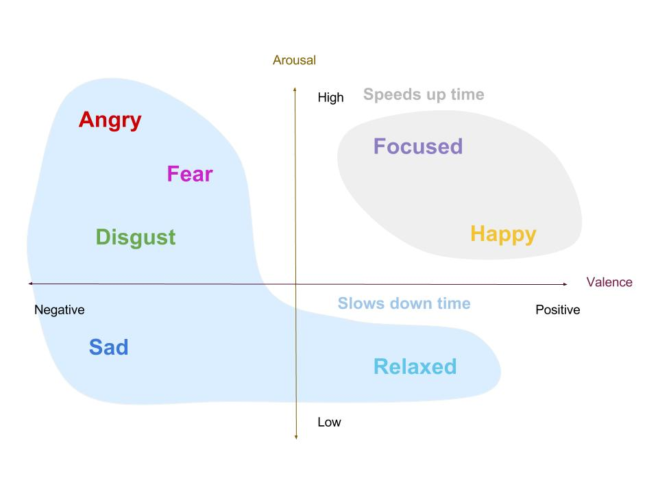

Collaboration
User states
Overview
This week I decided to explore in depth the relationship between people's emotion/cognitive states and their time perception. I also used integrated the sensors in my Android app so that the sensor values could control the behavior of the clock via the Android app.
Emotional states
Ekman's emotions
Ekman’s six emotions - Fear, Anger, Sadness, Joy, Disgust and surprise - are commonly understood in the literature for affective computing. I chose five out of the six basic emotions because they were depicted in the Disney movie Inside Out and are more likely to be understood by common man.
Color theory and emotions
Inorder to represent the emotions using colors, I chose to have the same emotion-to-color mapping as the movie Inside Out. Coincidentally, Paul Ekman uses the same emotion-to-color mapping in his Atlas of emotions website
Paul Ekman
Atlas of
Emotions
Color theme
Inside
Out
Quantifying emotions
Valence/Arousal
In psychology and affective computing, moods and affective states are often expressed using valence (negative/positive) and arousal (high/low). You can see an example of some emotions on the valence/arousal graph here.
Time perception and emotions research
Research shows that time goes faster when you are staring at a smiling rather than a frowning person (Edmonds et al. 1980). Time, in general, appears to move faster during positive experiences and slows down during negative emotional states, e.g. when we are sad, depressed (Gil, 2009), afraid (Stetson 2007, Buetti 2012), or lonely (Twenge, 2009). Time perception is also affected by how engaged or attentive we are - the more engaged a person is, the faster time goes, and when a person is relaxed, time goes slow (Brown 1985; Curton 1974; Tse 2004; Burnside 1971). Using this background research, I created a simple way to map user’s emotional and cognitive state to their perceived speed of time.
- 
More motivation
Psychological disorders
Time perception also affects our decision-making as impulsive decisions are highly correlated with an overestimation of time, i.e. a speedy perception of time (Wittmann, 2012). Psychological conditions like ADHD (Levy 2001), schizophrenia (Franck 2005), borderline personality disorder (Berlin 2004), and anxiety disorders (Bar-Haim, 2010), are also known to distort time perception.
Mindfulness
Time perception is also a key consideration in areas of consciousness. The specious present is the time duration wherein one's perceptions are considered to be in the present ( James, W. 1893).; mindfulness meditation lead to slower perception of time (Wittmann, 2014; Kramer 2013). Chronesthesia (Tulving, 2002), the ability to go back and forth in time within your mind, is also interpreted to be the navigation or manipulation of the subjective perception of time.
Android App
The Android app is a key part of the system via which the clock and physiological sensors communicate with each other.
System Diagram
Full
System
Color theme
Inside
Out
Citations
Kramer, Robin SS, Ulrich W. Weger, and Dinkar Sharma. "The effect of mindfulness meditation on time perception." Consciousness and cognition 22.3 (2013): 846-852.
Wittmann, Marc, and Stefan Schmidt. "Mindfulness meditation and the experience of time." Meditation–Neuroscientific Approaches and Philosophical Implications. Springer International Publishing, 2014. 199-209.
Bar-Haim, Yair, et al. "When time slows down: The influence of threat on time perception in anxiety." Cognition and Emotion 24.2 (2010): 255-263.
Edmonds, E. M., Cahoon, D., & Bridges, B. (1981). The estimation of time as a function of positive, neutral, or negative expectancies. Bulletin of the Psychonomic Society, 17, 259-260.
Gil S, Droit-Volet S (February 2009). "Time perception, depression and sadness" (PDF). Behavioural Processes. 80 (2): 169–76. doi:10.1016/j.beproc.2008.11.012. PMID 19073237.
Stetson C, Fiesta MP, Eagleman DM (December 2007). "Does time really slow down during a frightening event?".
Buetti, Simona, and Alejandro Lleras. "Perceiving control over aversive and fearful events can alter how we experience those events: an investigation of time perception in spider-fearful individuals." (2012).
Twenge, Jean M., Kathleen R. Catanese, and Roy F. Baumeister. "Social exclusion and the deconstructed state: time perception, meaninglessness, lethargy, lack of emotion, and self-awareness." Journal of personality and social psychology 85.3 (2003): 409.
Brown, Scott W. "Time perception and attention: The effects of prospective versus retrospective paradigms and task demands on perceived duration." Perception & Psychophysics 38.2 (1985): 115-124.
Wittmann, Marc, and Martin P. Paulus. "Decision making, impulsivity and time perception." Trends in cognitive sciences 12.1 (2008): 7-12.
Levy F, Swanson JM (August 2001). "Timing, space and ADHD: the dopamine theory revisited". The Australian and New Zealand Journal of Psychiatry. 35 (4): 504–11. doi:10.1046/j.1440-1614.2001.00923.x. PMID 11531733.
Van Wassenhove, Virginie, et al. "Distortions of subjective time perception within and across senses." PloS one 3.1 (2008): e1437.
Berlin, Heather A., and Edmund T. Rolls. "Time perception, impulsivity, emotionality, and personality in self-harming borderline personality disorder patients." Journal of personality disorders 18.4 (2004): 358-378.
Curton, Eric D., and Daniel S. Lordahl. "Effects of attentional focus and arousal on time estimation." Journal of experimental psychology 103.5 (1974): 861.
Burnside, W. (1971). Judgment of short time intervals while performing mathematical tasks,Perception & Psychophysics,9, 404–406.
Franck N, Posada A, Pichon S, Haggard P (May 2005). "Altered subjective time of events in schizophrenia". The Journal of Nervous and Mental Disease. 193 (5): 350–3. doi:10.1097/01.nmd.0000161699.76032.09. PMID 15870620.
Tulving, Endel. "Chronesthesia: Conscious awareness of subjective time." (2002).
Tse, Peter Ulric, et al. "Attention and the subjective expansion of time." Attention, Perception, & Psychophysics 66.7 (2004): 1171-1189.
James, W. (1893). The principles of psychology. New York: H. Holt and Company. Page 609)